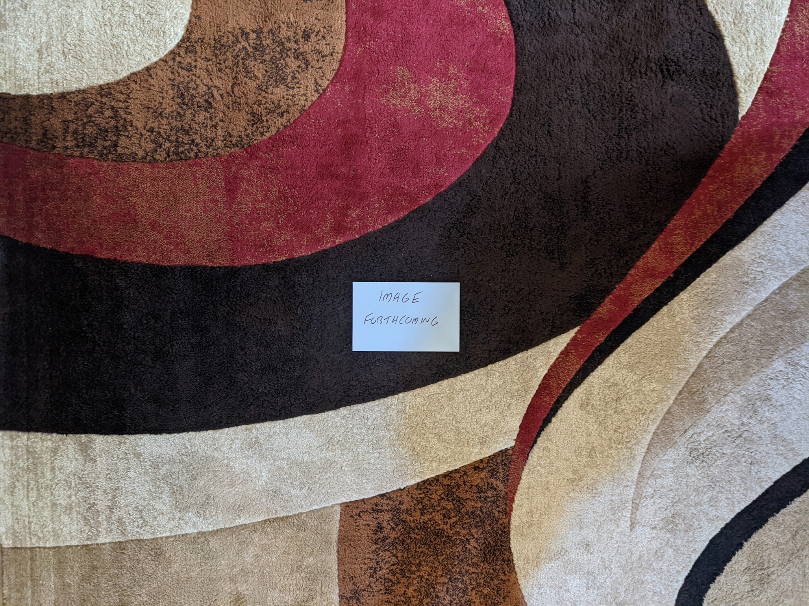

1990s¶
{kind=link}
1990s Overview¶
TBD
1990s Stats/Favorites¶
Section started: 2 January 2023
Section complete: TBD
Latest update: 24 January 2025
Total Albums: TBD
Top Artists:
TBD
Favorite album:
TBD
Favorite Song:
TBD
1994¶
In 1994 the local classic rock station that I frequented changed to a modern, hard rock format. At first, I resisted the change and retreated into the CD collections of my siblings. That station, WYSP, was also the broadcaster for my beloved Philadelphia Eagles, and used the alternative rock of the station as bumpers out to commercial breaks. Eventually I relented to the new format and discovered a window to the music that my peers at school were listening to. It was the last days of grunge, and a more diverse collection of sounds were driving rock music. Some of the mid-90s hard rock that I was hearing still makes my list of favorites below. Beyond rock music, there are quite a few bits of 90s eclecticism on there as well. While I only knew about a quarter of these albums in their year of release, this would be the peak of my pop music awareness until my late teens.
Looking back, this was a particularly strong year for popular music. I think this is where the positive eclecticism of the 90s really started to kick in, and there was a wide range of sounds to listen to.
{kind=link}
Under the Pink by Tori Amos - Perhaps the most Tori Amos of the Tori Amos records. A completely unique, iconoclastic collection of highly personal, yet thematically ambiguous piano songs. The wide range of textures and moods makes for a record that never gets old, even after hundreds of plays. While the instrumentation and performances give a similar feel to her debut, the arrangements and song structure take things to a more experimental level that foreshadow the ambitious works to come. I think for much of the fan-base, this is “the record”. While that isn’t true for me, it certainly is a record I will keep coming back to. [Memory: This is another of those records that takes me back to my freshman year in college, listening on my portable cd player through a cassette adapter as I commuted in. There is a kind of excited, warmth to this album. The sounds of someone who has lived a somewhat sheltered life, and discovered the world a few years later than every one else. Or maybe that was just me.]
Parklife by Blur - Every generation has a British band that is the most British of the British bands. In the 90s, that was these guys, and this is their most British album. I mean, there is a song based on the maritime weather conditions broadcast. A lot of Britpop, is more rock than pop, but this album really puts the pop to the forefront. [Memory: For many years I tried to convince myself that this was not the best Blur record. I was wrong, this is amazing.]
No Need to Argue by The Cranberries - This is tremendously beautiful music. The grunge adjacent riffs and half-yodeled vocals of “Zombie” were the breakout hit, and most enduring moment, but I much prefer the subtle ballads. Much of the music has that 1980s 4AD sound, and the vocals of Dolores O’Riordan are peerless. Are they the best Irish band of all time? [Memory: For some reason it took a really long time for the label to satisfy the demand for a vinyl reissue of this one. They kept releasing small batches that would sell for over a hundred dollars on Discogs. I personally had two pre-orders go unsatisfied due to lack of stock. This one really highlighted the supply issues of the vinyl revival.]
Semantic Spaces by Delerium - The huge pivot for Leeb/Fulber, what used to be an ambient, instrumental project now brought female guest vocalist to the fore. The formula was a massive success, and would continue for the next two decades (with perhaps too little variation to hold interest). There are still some fantastic instrumental tracks here, but the “pop songs” give the work sustained interest that the prior records lacked. “Tribal Industrial” music was all the rage in the mid-90s, but rarely would it sound this good. [Memory: During a 1999 trip to Niagara Falls, we were driving back from a fireworks display listening to modern rock station Edge 1002. The Canadian radio programming felt exotic and exciting. The evening program played a continuous mix of electronic sounds, almost all of which were unfamiliar to me. A sequence of two tracks particularly caught my interest. One of them turned out to be a new song by Moby (see 1999), but the other took a bit more work to sort out. I wrote a detailed E-mail to the station describing what I could remember. One word that I caught when the DJ did provide a list of the artists was Delerium. The helpful staff at Edge 102 pointed me to the Canadian electronic duo with that name as a potential lead. Thankfully they had a great website, that even included short realvideo samples of their latest work. It was there I found the song: “Flowers Become Screens” which would lead to what would become one of my favorite artists in the early 2000s, and who I still very much enjoy today.]
Promenade by The Divine Comedy - [1994 FAVORITE] - From a musical arrangement perspective, and perhaps also from a lyrical perspective, this is Neil Hannon’s most ambitious work. There are also plenty of his trademark whimsey, especially on “A Drinking Song”, and Irish pastoral beauty on tracks like “The Summerhouse”. But, the main thrust of this album are heady, complex tunes like “When The Lights Go Out All Over Europe” and especially “Don’t Look Down”. [Memory: Around 2012, I became aware of Brooklyn indie iconoclasts Zambri who posted a cover of “Tonight We Fly” to their Soundcloud. It was now the Spotify era and I could immediately research and locate the original artist. That would lead me to this album and The Divine Comedy. Strangely, I would go no farther, and it would take several years for me to listen to any of the other tracks. It would then take a further few years for me to listen to another record by the artist. I’m not sure why I engaged so slowly, but eventually in 2017, I would have a new favorite artist.]
Bee Thousand* by Guided By Voices - Still their finest work. While the formula has varied little over their long career, it comes together here in a way that it never quite would again. Perfect little 1-2 minute pop songs, with just right amount of fuzz and distortion to give them a big punch. This is the kind of album that needs to be played loud to the edge of discomfort. That said, I don’t know that this ever gets enough credit for how beautiful the melodies are as well. [Memory: I saw them play at the Pitchfork Music Festival in 2011. I remember losing my mind when the played “Gold Star for Robot Boy”. While writing this I wondered if there was any video of their festival performance out there. On youtube I found a video of that song from a perspective that felt very familiar. What did I see in front of the camera? It was the back of my head, clearly losing my mind getting into the tunes.]
The Holy Bible by Manic Street Preachers - Based on the lyrical content, the label didn’t release this in the USA. So like most everyone over here, I didn’t hear it until many years later. That is a shame, as it really has a surprisingly fresh, punk inspired sound that was contrary the prevailing trends of the day. British music was mostly an isolated, and independent scene from the alt rock that was happening on the other side of the Atlantic, and this album might be the most representative artifact of that era. It has been called the most negative album ever made, and the lyrics are mostly coming from a very dark place. Behind the gloom is a kind of rage that offers a way to a different place. This album contains the legendary runon song title: “Ifwhiteamericatoldthetruthforonedayit’sworldwouldfallapart”, and it is a great song! [Memory: I became aware of these guys watching a Glastonbury annual retrospective on HDNet (a channel that played HDTV content in the early, novel days of the technology) in 2007. This mysterious record that hadn’t yet had an official USA release was heralded as a cult classic, and my interest was piqued enough to import a copy.]
Vauxhall And I by Morrissey - In retrospect, this feels like the last album of his classic period. We are still very much in the sphere of The Smiths with elements of anthemic Britpop sprinkled in. It is loaded with classic songs that still feature heavily in his live shows like Now My Heart is Full and frequent closer Speedway. The highlight for me are the tender moments like “Hold on to Your Friends” and “I am Hated for Loving” that have a kind of openness and sincerity that is rare in the Moz’s catalog. [Memory: When I was very into WYSP modern rock radio, they were playing one song that was very different from the typical hard rock that comprised most of the playlist. It was “The More You Ignore Me, the Closer I Get”. The whimsical crooning was confounding to my 14 brain, but it made a favorable impression. When Napster would become a thing several years later, it would be one of the first songs I sought out. It would take another eight years until 2008 when I bought his latest best of compilation. From there I would gradually become a scholar of the entire Morrissey catalog.]
The Downward Spiral by Nine Inch Nails - I do really enjoy this album, but unlike almost everyone else in the world, it is not my favorite of Trent’s. I prefer the slick synthpop that came before, and the prog epic that came after more than this heralded release. That said, there is a lot to like here, even if I find it hard to engage with something this angry as I settle into the contentment of middle age. The hits are great, but the filler..is filler, and this isn’t one that I listen to in whole very often anymore. That said, every now and then, there is nothing that I need more than a listen to this. [Memory: When this came out, this “band” seemed to dark and aggressive to me. I saw all the kids in their NIN shirts at school, but I didn’t listen to this album until many years later, and after I was a big fan of the albums that were release on either side of this one. Weirdly, this record makes me think about Circuit City. The electronics retailer sold CDs at a significant discount as a loss leader. I bought nearly the entire NIN catalog at the store in the late 90s early 2000s. This album was one of the last I bought at the State College location before it closed around 2009.]
MTV Unplugged in New York by Nirvana - This will be the only release on my list by this legendary band. While I enjoy both Nevermind and In Utero, neither are a complete work in my opinion. The high points are amazing, but the low points are very mediocre. This is a wonderful, but kind of strange live recording. Very few of the hits are here, but many of the mellower tunes that didn’t really work on the studio albums sound great here. There are a ton of covers, which are probably the better known cuts from the show: Bowie’s”The Man Who Sold The World”, “Jesus Doesn’t Want Me for a Sunbeam” by The Vasilines, and no less than 3(!) tracks from the Meat Puppets second record. This would serve as the exclamation point on a brief, but very notable career, and would drive interest in some pretty great music by other artists. [Memory: It is hard to remember a time when live albums could be mega hits, and spawn multiple tracks getting serious radio airplay. That said, that is how it was in the winter of 1994/95. This record was everywhere.]
Crooked Rain, Crooked Rain by Pavement - This gets the reputation of the “mainstream” release by these guys, but I’m not sure that is quite right. This is much the same as what came immediately before and after, but for a brief moment that aligned with what was en vogue. In 1994 their was a tolerance for a wide range of sounds in mainstream rock, and this shambolic outfit reaped the benefits of that climate. “Cut Your Hair” is the song you will see used in TV promotions, but for me, “Rage Life” is the definitive statement. The track stands both musically and lyrically in opposition of the perceived prevalent trends of the contemporary rock world. Ironically, this song was released at a time when the prevailing trends mattered the least. [Memory: In general the headliners at the Pitchfork Music festival were disappointing, but 2010 was a different story. And these guys closed out the festival on Sunday with a bang. I can still see Stephen Malkmus doing a high leg kick as they kicked into “Cut Your Hair”.]
Vitology by Pearl Jam - This album was released at the peak of the band’s relevance to popular culture, and it delivered. The aggressive rockers like “Last Exit” and “Whipping”a re still there, but they are rapidly becoming more about the story ballads like “Nothingman” and “Better Man”. No longer young punks, the Springsteen’s of the 90s were born. [Memory: The release of this album was a huge event. I remember stories on the news about people lining up at stores at midnight on Tuesday for a copy. I remember being amazed that some folks were still buying a vinyl copy! Little did I know that I would return to the format 14 years later. I now too have a vinyl copy of Vitology.]
Dummy by Portishead - A truly strange record. An especially atmospheric brand of trip-hop, with vocals by Beth Gibbons that sound like they were designed for use in a horror film. The kind of album to be listened to in a dark room with a glass of whiskey, neat. [Memory: It took me a long time to appreciate this. I loved the last Portishead record immediately, but it took me a bit to appreciate the more trip-hop heavy music on this classic.]
Monster by R.E.M. - A shocking return to heavier rock sounds at release, it still stands as a noted left turn 20 years after. After several albums of quieter, roots rock inspired faire, “What’S the Frequency Kenneth” was a big jolt to the fanbase. At the time opinions were mixed, but this now is mostly universally accepted among their finest work. [Memory: This was a band that I was actually very into at the time. I was also a fan of their earlier punk inspired work, so the heavier sound was less of a shock to me.]
Superunknown by Soundgarden - A lot has been said about the disjointed sensibilities of the metal inclined instrumentalists of the band and their 60s pop loving front man. This is the album where that tension is fully starting to show, and produce sonic gold like major hits “Spoonman” and “Black Hole Sun”. The latter was everywhere in 1994, and for good reason. The mixture of grunge metal and psychedelia was a revelation. [Memory: I really liked these guys at the time. It took me many years to realize the parallels between this music and the latter day Beatles music I was obsessed with at the time. That said I never bought this CD in the 90s since it came from the “Metal” section of the Columbia House catalog, which was not going to fly in my family.]
Purple by Stone Temple Pilots - In many ways, 1994 was when alternative music crossed into the mainstream, and there was no bigger example of that than “Interstate Love Song”. Looking back, the track is a masterful example of an band dialing back their sound just enough to get on mainstream pop radio, while retaining their core essence. I have to wonder what some of the folks who bought the album based solely on that song though of the far heavier tunes like “Meatplow” and “Army Ants”. I know what I think of them, they are probably my favorite work by these guys. [Memory: I like to think I have an usually objective ear, and this is one of those albums that gives me a bit of proof. Throughout the 90s and 00s there was a prevailing narrative that this band were poseurs and imitators of more authentic acts like Pearl Jam. I never saw it. I only saw an appealing combination of 90s hard rock and 60s psychedelia (that would be joined by garage rock and other influences later). The respect given to these guys really started to climb in the 2010s, and today I am far from the only person who gives them credit as one of the most interesting and enduring 90s alternative acts.]
Tortoise by Tortoise - A lot is made about Talk Talk and Slint giving birth to the post-rock genre, but for me, this is where it really starts. There is something about the particular atmospherics here, with the jazzy, wide open soundscapes that define the early post-rock sound. Soon, other acts would dial up the intensity and create a crescendo heavy variant of the genre, but Tortoise’s more leisurely approach still sounds great today. [Memory: I saw these guys play a now defunct Buffalo venue called Soundlab in the summer of 2010. It was a great show that made me appreciate the Math Rock elements of their sound that doesn’t come across as strongly on their early records.]
1995¶
Even as a child, I felt pretty connected to the pop music of the day, and that would intensify as teenager. That said, 1995 was probably the most out of step I would ever be with the music that was being released. I was very much looking back to the sounds of the 60s and 70s and could barely care about the hits of the day. The year that I started high school, I was way more interested in classic rock radio than I was the modern rock most of my peers were listening to. I missed some classic records that I would only discover in retrospect, including my favorites below.+
{kind=link}
Fun Trick Noisemaker by The Apples in Stereo - I’m a much bigger fan of the latter day, ELO tinged incarnation of this band. I like the earlier garage pop version as well, but this is really the only record from that era that stands out for me. I feel like they had things right on this first record, and spent the next 5-6 trying to recreate that sound. I also feel like the amateur production values here suit the music better than the more elaborate productions that were to come. [Memory: When this got reissued on vinyl, it was the moment that I realized I would have the opportunity to own the large majority of my favorites on that format.]
The Great Escape by Blur - The record where they fully embrace their jaunty, hyper-English side. What was hinted at on Parklife takes full form here. They must have been such a cheerful, brightly colored alternative to the other BritPop offerings of the day. It would all change again after this of course, but this will always be what they do best in my opinion. I like some of the latter day singles, but this is pretty much my off-ramp for this band. [Memory: These guys barely made a dent in the USA, and at this point, they were almost completely unknown. I can only imagine how much my Beatlemaniac self would have loved this at the time. There was no internet to know about this kind of thing back then!]
Outside by David Bowie - Peak 90s Bowie, and the work of an artist who was still working very hard to innovate while capturing the spirit of the current age. This is “art installation music” and modernist in that very 1990s kind of way. This is the music of the early internet age. It is also still very much a David Bowie record, and a great one at that. I didn’t really connect with this as much as his classic work back then, but not believe it to stand among his very finest work. [Memory: In the late 90s I was a huge Bowie fan, and I worked with another “music person” who only really liked this record of his. We listened to it a bunch back then at work, but I just didn’t get it back then.]
Alien Lanes by Guided By Voices - The second (and final) record from their peak era. A collection of perfect little lowfi pop gems, they would never quite capture this again. [Memory: Back in the early days of Pandora, it played “Game of Pricks” for me, and I was instantly hooked.]
To Bring You My Love by PJ Harvey - An interesting era for Polly Jean. She dialed up the glam and amped up the rock, yet kept the essential character that made the first two records so interesting. Its odd that this was such a commercial breakthrough, but anything seemed possible in the mid-90s. As fast as these changes came, they would be gone and replaced with something else that was new and wonderful. [Memory: I never liked this one as much as what came before and after. When the vinyl reissue series happened in the 2020 time frame, I thought long and hard about if I needed to add this one. I got them all, and wow I am glad that I did.]
Wowee Zowee by Pavement - This is one of those times that I do not agree with the crowd. This is almost universally considered their masterpiece. I like it, but it is a little too long. There is a great single album here, but not everything needed to make the cut. I think the albums before an after are sharper statements, and have better focus in the playful and more series sounds that proceeded and followed this one. That said, It is a still another great record that I enjoy listening to, just not as much as those others. [Memory: There was a used copy of this that sat on the counter at City Lights records for years. I considered buying it, but never did. I never owned a physical copy of this until the circa 2010 vinyl reissues that Matador did.]
Different Class by Pulp - I did’t know about this music in the 90s, but if I did, I would have loved it. Like many American youth of the time, I was attracted to the brightness of English rock music that was a big contrast with the murky post-grunge of the day. This has those wonderful dance elements that you needed to look across the pond to find. It also has the high quality songwriting that blows away the knuckle-draggers that were dominating the radio in the US. [Memory: I became aware of these guys and this album when William Shatner’s cover of “Common People” was making the rounds in the 2003 time frame. What a strange point of entry, but regardless I’m glad I found my way.]
The Bends by Radiohead - With how inventive of a guitarist Jonny Greenwood is, It is a real shame that this is their last album as a guitar based act. While the guitars would make their appearances in what came after, this is the last time they had a staring role. A tremendous rock album, and a milestone of the BritPop movement. “My Iron Lung” will always be one of their best songs. [Memory: For years I tried to claim this my favorite of their records. I think I was just making some passive resistance to the rise of electronic rock in the early 2000s.]
Ocean Beach by Red House Painters - I always feel a little guilty that I don’t like the music that Mike Kozelek made after he got his life together, as what he was doing in his darker moments. That said, this pleasant airy folk rock record holds up well to his earlier work. Maybe it is because there is just enough melancholy in tracks like “Summer Dress”. [Memory: In 2009 I spent some time as a tourist in San Francisco after a business trip to the region. I decided to do a “Red House Painters Walking Tour” where I visited all the places he name checked in the albums/songs, including Ocean Beach.]
Mellon Collie and the Infinite Sadness by Smashing Pumpkins - [1995 FAVORITE] - There have been quite a few bands in history that for a brief moment in time, managed to completely transcend themselves and make music that seems completely beyond what they should be capable of. Smashing Pumpkins 1995-97 may be the most extreme case of this. A period of stunning creativity and productivity, these three years alone make them legends. This album is so over the top and wonderful from the little piano ditty it starts with, to the lyrically preposterous yet incredible “Bullet With Butterfly Wings”, and what feels like countless amazing and blistering rock tunes. People who say Siamese Dream is better than this are crazy. [Memory: It’s hard to separate this from The Aeroplane Flies High, which collected the singles and B-sides that were released in their glorious era. I actually loved that first.]
1996¶
When I look at the below image, I can confidently say that I didn’t hear any of these records in the year of their release. I was very familiar with, and a fan of many songs off of these albums, but none had found their way into my collection. This is partly because I was very much in the peak of my backward looking Beatlemania, and making my first explorations into growing favorites like Pink Floyd and David Bowie. It was also because many of the new artists I was interested in, seemed to conflict with the religious convictions of my parents. It is strange to think about now, but back then artists like Soundgarden, Stone Temple Pilots, and even Jamiroquai felt slightly dangerous and out of step with the conservative values of my family.
Thinking about this selection today, this feels like a pivot year between the rock heavy early 90s and the rise of pop in the latter half of the decade. There are also quite a few indie classics there, including a few landmark albums that would be very influential on the dominant music trends of the next decade (Belle and Sebastian, Stereolab, Olivia Tremor Control, Tortoise). Finally, Britpop is starting to reach full bloom with classics from Divine Comedy and Manic Street Preachers, and an American band has decided to join in (Lilys). If there a single dominant theme here, it is without question garage rock. That influence can be heard in artists as diverse as Olivia Tremor Control, Pearl Jam, Lilys and especially here in the album by Stone Temple Pilots. Its really clear to see the roots of 2000s indie in many of the albums listed here.

Boys for Pele by Tori Amos - [1996 FAVORITE] - A remarkable record, produced by an artist who was experiencing a significant level of artistic freedom for the first time. While we have the first elements of the electronic music that would dominate the next few records, this is mostly still an acoustic, piano driven affair. The song structure and the fundamental structure of the album is quite different from anything that had really come before by any artist. The lyrics are more impenetrable than anything on her first two records, but they are evocative of multitude of emotions. I don’t know that there is another album where I understand so poorly what the artist is singing about, but I know exactly what they mean. So many of my favorite songs of all time are on this album, and it is one that I will never tire of. [Memory: When I was in grad school, I met a woman studying in another program through a friend in her lab. We connected very deeply over this record, and the next three times our friend group met up at the bar, we spent the entire evening chatting. I’m pretty sure everyone else thought we were going to start dating. I might have even thought that for a brief moment, but we really both just really like that album, and the artist.]
Tidal by Fiona Apple - This feels so conventional by the modern standards of the artist. The first album is definitely quite a bit more straightforward than what was to come, but no less interesting. The moody, singer-songwriter material on offer here is just as stunning today as it was back then. “Criminal” was the big hit back then, as much for its lolita-esque music video, as the song it was promoting. Most of the other material holds up much better today, especially “Shadowboxer” and the softer tracks like “Sullen Girl” and “Never is a Promise”. [Memory: I got my copy of this album from my sister as a hand me down in the summer of 1998. She didn’t connect with it beyond “Criminal”. I was in the heights of my Tori-mania and this was a great fit for that time in my life. This album brings back vivid memories of driving my metallic purple 1997 Dodge Neon to the Penn State satellite campus I attended in Reading, PA. Many of those freshman mornings I would have this in the Sony Discman that was playing though a cassette deck adapter.]
If You’re Feeling Sinister by Belle and Sebastian - One of their best albums, but unlike most fans, I do not consider it to be their very best. This is a tremendous indie-folk record, but for me it isn’t quite as effective as the more spare, unpolished EPs that came before, or the slicker poppier music that would come in the next decade. However, there are some great tracks here, especially “Like Dylan in the Movies” and “Seeing Other People”. [Memory: These guys dominated my listening in the 2004-2006 time frame. This is the soundtrack to the end of my academic career and start of my first job.]
First Band on the Moon by The Cardigans - “Lovefool” was a massive hit, and while a great song, it sells these guys a bit short. The kind of pop music that can only come from Scandinavia, this is sweet, but surprisingly moody music. It would get even darker from here on out, but there is a real chill to the atmospherics and songwriting on this record. [Memory: I was listening to this a lot in the Summer of 1999, and it reminds me very much of my first engineering internship. I would listen to CDs on my Windows NT machine that I used make CAD drawings. This was one of the discs that was on repeat.]
Casanova by Divine Comedy - There are many of the typical elements here: the sense of humor, the chamber pop sensibility, the layered harmonies by the artist. However, this is the closest this guy has ever come to actually making Britpop. It is the eccentric kind of Britpop made by the likes of Blur, and it isn’t quite all the way there, but if you squint, it is there. For many folks this is the best record, for me it is in the middle of a very strong pack of records. [Memory: This was the second album I tried from this guy after losing my mind listening to Promenade repeatedly for about 5 years. I remember wondering why I waited so long to dig deeper.]
Dance Hall at Louise Point by John Parish & PJ Harvey - This is the first record in the quieter, artier sound that would become her predominant style in her more recent work. There still are some aggressive, abrasive moments here, but they unfold in a creeping, pensive way that is also very representative of the latter day Polly Jean. “Heela” is such a remarkable song, and will always be one of my favorites. Even though we would get a few more records in a more conventional rock style, this is the start of the PJ we know and love today. [Memory: When I was working my way through her catalog in the 2007 time frame, I bought a used CD copy of this for about a dollar and didn’t know what to make of it. This took me a while to fully appreciate, but it is not one of my very favorites.]
Traveling Without Moving by Jamiroquai - It is hard to think about this record without picturing that legendary video for “Virtual Insanity” and I’m sure I would never have heard this album without that amazing promo clip. That said, this is a funky, highly enjoyable affair that is more than a little derivative of Stevie Wonder. Much like the master it has patterned itself after, what we get here is a pleasant mix of funky upbeat tunes, and pretty soulful ballads. [Memory: This makes me think of a quant music “format” that I collected in the late 90s. CDs were expensive (and in some cases, evil in the religion I was raised in) and I couldn’t always acquire the latest tunes I liked from TV or radio. The internet of the late 90s provided me an approximate solution, the MIDI file. I downloaded the minimalist, instrumental sequencer versions of popular tunes that I didn’t have for real. I remember downloading a particularly impressive version of “Virtual Insanity” in the (new at the time) XG MIDI format. It didn’t have the vocal track, but I could still enjoy that funky groove.]
Better Can’t Make Your Life Better by Lilys - I love The Kinks and so apparently does Kurt Heasley, the man behind Lilys. This feels like a love letter to the pre “Village Green” Kinks and it is expertly done. The 90s were a time of significant interest in the sounds of the mid 60s, and this is a expert recreation and modernization of the garage rock sound. [Memory: There was a vinyl copy of this at one of my favorite Rochester shops (The Bop Shop) for probably about 5 years before I finally pulled the trigger and picked it up. Why was I delaying, this is wonderful stuff!]
Everything Must Go by Manic Street Preachers - These guys were always one of the heavier BritPop acts, but this is where the balladry and pop sensibility started to really creep in. That said, it totally works. A really polished and literate set of tracks that never get old. The epic “Elvis Impersonator…” returns to one of their favorite topics, the relationships between the UK and America. Admittedly their frank consideration of that topic is why they never really made it over here, and why I didn’t hear anything from them until the mid 2000s. I would have absolutely loved it back then, and I certainly do now! [Memory: “A Design for Life” is the ultimate BritPop anthem. It was made to be screamed along with by a Glastonbury festival crowd. I got a noise violation letter for jamming it too loud at in my State College apartment in 2007.]
Older by George Michael - This album sold millions of copies, but not as many millions of the two prior, and therefore was perceived as a failure at the time. Today it sounds like a revelation. A sophisticated, mature affair with some of his best songwriting and vocal performances, this was not fully appreciated at release. “Jesus to a Child” is a remarkable song, perhaps his very finest. Everything has such a warm, atmospheric vibe. Maybe the best 90s sophista-pop record. [Memory: I certainly remember the singles from this record getting played (especially on VH1), and had them on a greatest hits compilation, but I didn’t listen to the whole album until 2021. After reading a biography on the artist I streamed all the records and was blown away by this one.]
Who Can you Trust by Morcheeba - The big breakout for these guys, and a wonderful evolution of trip-hop. The kind of smooth and elegant record that you could replay to infinity and not tire of. It is almost like Portishead has been polished up and made TV commercial ready, but somehow still very compelling. [Memory: Early in the 2020 pandemic year, I made an effort to listen through to albums I acquired in the CD era and had forgot about. I rediscovered this brilliant LP though that process.]
Dusk at Cubist Castle by The Olivia Tremor Control - I like the pop songs on this record quite a bit, but the ambient, instrumental parts just don’t work as well as the ones on the next (and final) record. No denying how influential everything about this would be on a whole generation of psych rock revivalists. [Memory: These guys always remind me of my move to Rochester, NY. I was very into them around that time, and they would also reissue all their records on vinyl around that time.]
In Sides by Orbital - The definitive album oriented techno record. They always liked to work in longer forms, but this whole album is built around 10-20 minute chunks of music. I’m always going back and forth between this and the brown album as my favorite, but without question “Out There Somewhere” is there absolute best moment. Techno in general hasn’t aged well, but this still sounds amazing today. I really love the way they mix in real instruments with all the electronics here. It gives a texture that a lot of the electronic music of the day did not have [Memory: One of my favorite things to play on a run, it is hard to not think about exercise when I hear this record.]
No Code by Pearl Jam - This has always been my favorite of their albums, and I feel like the world has caught up with me. The stripped back garage mentality suits them well, and captures their live nature better than any of their other work. Short, hard-hitting songs that avoid the extended bombast that they sometimes tend to fall into. They also mix in one of their sweetest balads in “Off He Goes”, and the greatest Pearl Jam song not sung by Eddie Vedder in “Mankind”. [Memory: I bought a used copy of this at a secondhand store called Cash Converters around 1999. I payed a dollar for it, showing how unappreciated it was at the time. I later payed almost 40 bucks for the vinyl reissue, and many others were happy to do so as well.]
New Adventures in Hi-Fi by R.E.M. - A clear attempt to return to a more arty, low-key sound after the straightforward rock of Monster. This was very under the radar at the time, but many people (including myself) learned to appreciate this over time. [Memory: I bought my CD copy of this record when I was working as a summer intern at NASA Glenn in the summer of 2023. There was a message board where you could post things for sale, and I bought this from someone along with Hum’s You’d Prefer an Astronaut.]
Down on the Upside by Soundgarden - In my opinion, this is a highly underrated follow-up to their breakout hit Superunknown. A return to more conventional hard rock, with some elements of the singer-songwriter fare that would dominate the early Chris Cornell solo career. This would have been a great way for them to wrap up, except for the ill advised reunion in the 2010s. [Memory: “Blow Up the Outside World” was one of the very first MP3s I downloaded from the internet. Weirdly I downloaded it from the FTP server ran by a fellow student who I didn’t really care for at my high school. “Free” music conquers all barriers.]
Emperor Tomato Ketchup by Stereolab - 90s indie was wildly diverse and often hard to categorize, and this might be the definitive album of the era. Electronic tinged rock music with a Krautrock groove and a pop soul, there is a little bit of everything here. This was the doorway to so many places for me: Can, Kraftwerk, Bell and Sebastian, Of Montreal, and who knows what else. [Memory: Maybe the most important record I sought out because of the AllMusicGuide genre summaries. They considered this an indie landmark, and that isn’t putting it strongly enough.]
Tiny Music… by Stone Temple Pilots - Much like No Code (above), I feel ahead of the times picking this record out as this band’s finest hour. The combination of garage, psychedelia, and glam on offer here is a very unique and memorable sound from a group that was often dismissed as derivative. Here they sound very much ahead of the times, and almost sound a little prophetic of the indie rock that would dominate the turn of the millennium. [Memory: When I look at the cover of this record, I can’t help but picture the Columbia House music club mailers and magazine adds that seemed to feature this album for the better part of 1996-97.]
Millions Now Living will Never Die by Tortoise - This may be the definitive post rock record. A straight up fusion of punk and jazz, this sound has been attempted so many times, but very rarely this well. I sometimes wonder if these guys are why I grew up to like jazz (particularly electro-jazz) so much. [Memory: The name of this album has always fascinated me, since it is titled after the greatest lie ever told by the religion I was raised in. I wonder how that came to be?]
1997¶
I have mentioned this several times, but it is important to know that I worked on this project starting in 2020 and moving backwards in time. As a result, milestones were observed in reverse. When I look at the records below, I can see the influence of three very big factors for the very first time. First, this was the year that I would have my first jobs that would bring in money that I could use to purchase albums of my own choosing. Second, I got my drivers license which allowed me to transport myself to the mall or Best Buy/Circuit City where I could personally select the music I was interested in. This means for the first time there are quite a few records on the list that were something that I purchased with my own money in the year of release.
The third big event was something the whole world was going through at the same time, the Internet. We didn’t yet have MP3s for music discovery, but static webpages of dial-up and Web 1.0 were a wealth of information about the latest activity and releases from my favorite artists. We had recently subscribed to AOL at home, and it opened my eyes to a range of information about pop music and a variety of other topics.

Primeirs Symptomes by Air - An EP that serves as a great summary of what makes these guys great. Light and pleasant French electronica, with an indie rawness that made it sound more warm than slick. [Memory: I was aware of this disk for years before I got a copy. The physical release was always an expensive import, but through the magic of eMusic, I would get a digital copy years later, and finally had the complete catalog of this band.]
Earthling by David Bowie - I’m proud to say that I have always been a fan of 90s Bowie, even when others (even if they wont admit it now) were saying he was over the hill. Some of the electronic sounds are dated now, but it only adds to the charm. That Bowie magic is still here in a big way. “Battle for Britain” is one of my absolute favorites of his without qualification. [Memory: This brings together two of my biggest interests in 1997: Bowie and The Internet. Bowie was famously and early advocate for the web, and one of the first artists to fully harness its power. I vividly remember viewing a RealVideo encoded file at extremely low bitrate of the video for the lead single “Little Wonder”. The sounds and the technology blew my teenage mind.]
Karma by Delerium - [1997 FAVORITE] - My absolute favorite by these guys also happens to be their most widely known. I do enjoy the Sarah McLachlan fronted mega-hit “Silence” (and the late 90s is the only time something like this would be a hit) but my favorite is the stunning “Euphoria (Firefly)”. The combination of light industrial beats and world music exoticism reached a peak on this record. [Memory: I remember playing this for one of my friends on a drive, and their reaction was: “So this is the kind of music you are into now, huh?”]
A Short Album About Love by The Divine Comedy - The artist claims to have written this album before ever actually being in love, and I think it shows. There is something charmingly detached about this collection of love songs. A lot of the usual humour (“If”) and warmth (“Everybody Knows”) that would typify the second act for this guy. Probably the beginning of the fully mature work for Neil Hannon, and one of his absolute finest moments. [Memory: When the vinyl reissues came out in 2020, it really made me see the whole discography in a new light. I don’t know if any album climbed my personal ranking more than this one. It really is the kind of thing that needs to be listened to in whole, and hits hard in its short running length.]
So Much for the Afterglow by Everclear - Music from this era hasn’t aged very gracefully. Mostly a collection of post-grunge, nu-metal, and pop-punk, late 90s rock was a collection of fads that haven’t generally stood the test of time. The combination of power pop and mature singer songwriter themes on display here have held up way better than most of the rock radio favorites of the day. Also a pretty killer record from start to finish, which is also a rarity for the era. [Memory: This is one of the few records from this year’s list that I was actually into at the time of release. I really enjoyed the radio hits, but it was the deep cut “Why I Don’t Believe in God” that made this a classic album of my teen years. It really connected with where I was at this point in my life, and also made me love the banjo as a rock instrument…until a bunch of hacks ruined that in the 2010s.]
F# A# ∞ by Godspeed You! Black Emperor - The start of the journey for these guys, and for the genre of chamber, apocalyptic post-rock as well. Everything that they continue to do is already fully formed here. I don’t come back to this one as much, because I feel like the formula was refined in the later albums, but I always enjoy it when I do. Perhaps a bit more ambient with meandering soundscapes that have been reduced in later efforts, and with a generally lighter touch than the crescendo heavy later works. [Memory: The Godspeed records seem to have always been perpetually in print on vinyl, and I was able to buy this and complete my catalog of LPs back in the dark ages of circa 2009.]
Mi Media Naranja by Labradford - In the 90s and early 2000s, Ennio Morricone inspired post-rock was a fairly productive sub-genre. A lot of the music sounds very much the same, and for me, this is the best product of that scene. Moody, vaguely western soundscapes, that sound hopeless and spacious. I’m not in the mood for this very often these days, but wow was I about 15-20 years ago. [Memory: This is the kind of record I would have never found without the AllMusicGuide. Fairly obscure when I found it, and even more obscure today, the AMG article on post-rock considered it a landmark of the genre. I’m glad that it pointed me this way.]
Flaming Pie by Paul McCartney - In retrospect, this feels like one of the most important albums in a very important career. For the first time you can hear him coming to terms with his Beatles past, and fully engaging with a musical future that both considers with what came before, and what lies ahead. This was also the last record with the input and presence of his collaborator in music and life, Linda. This is where things really started to come together, and the brilliant final act of a brilliant musical career had it’s start. [Memory: This was definitely the record I was most excited for at the time. I was in the peak of my Beatles & McCartney fandom, and this was the first new release since I had discovered these artists (other than the archival “Anthology” and “Live at the BBC” releases). I remember logging into the MPL Records website to view the latest posts to the “Flamming Pie Gazette” that provided updates on the production of the record. I was so excited to hear a short clip of “The World Tonight” in RealVideo format. This record invokes nostalgia not just for the music, but also the early web.]
Surfacing by Sarah McLachlan - This is one of those records that I really enjoy, but wonder if its lasting effect has been negative. Up to this point, women’s music had been arguably the highlight of 90s pop/rock. The likes of PJ Harvey, Tori Amos, Alanis and countless other women were making stunning, edgy work that was finding its way to the mainstream against all odds. Once the record execs got a look at this lush, pretty record, it felt like there was a massive shift in what they were willing to promote. I certainly don’t want to blame McLachlan who is a master at this kind of music, but why couldn’t it live side by side with all that other really awesome stuff that wasn’t as easy to fit into the background of TV commercials? [Memory: I heard “Building a Mystery” for the first time while exercising at my physical therapist during a recovery session after breaking my left ankle.]
Cherry Peel by Of Montreal - Where it all began for Kevin Barnes, it sounds stunningly small compared to where he would take his music. A collection of good natured, lowfi pop songs with imaginative lyrics and melodies, this project was solid from day one. “I can’t Stop Your Memory” is a tiny masterpiece of retro-pop. It almost sounds like the 1967 Beatles going back and making music the way they did in 1961. [Memory: Thanks to eMusic, I probably heard this album years before I otherwise would have. The cheap mp3 downloads allowed me to explore obscure back catalog records like this one years before streaming made this trivial.]
Brighten the Corners by Pavement - A bit more put together than we are used to from these guys, but still had enough of that shambolic magic. That said, this is clearly the work of a band and a front man who were starting to outgrow their fundamental concept. [Memory: About 20 years after the release of this record, Spotify radio kept playing the song “Harness Your Hopes” and I couldn’t figure out why I didn’t know the track. Apparently left of this album, how in the world did one of the most representatively perfect Pavement songs not make the track list?]
OK Computer by Radiohead - For a significant number of folks, this is the best album of the 90s, but it isn’t even my top Radiohead album of the decade. That said, it still is a classic transition record, spanning their Britpop roots and the dreary, mixed-genre weirdness to come. I feel like the best moments here are the quiet tracks like “Exit Music (For a Film)” and “Lucky”. A few albums later they would learn to rock out more effectively again. [Memory: Ironically (given the role they would later play in legal downloads) this album reminds me more of the Napster era than any other. I wasn’t totally ready to buy into these guys as the next big thing, but I was happy to download a bunch of their stuff for no money. I now have this, and many of their albums, on both CD and vinyl.]
Unsound Methods by Recoil - I don’t find myself listening to Alan Wilder’s dark ambient project much these days, but I certainly found it very compelling 20 or so years ago. Some of this sounds a bit silly and dated now, and not edgy in the way it did back then. The more goth tracks like “Incubus” have aged better than the beat poetry based things like “Luscious Apparatus”. Probably best enjoyed as a late 90s time capsule now. [Memory: I got this at one of those “used goods” stores that were everywhere in the late 90s. The shop (Cash Converters) was often a great source of underrated records by popular artists, and obscure gems like this.]
Either/Or by Elliot Smith - This is a stunning little collection of gentle indie rock tunes. The most beautiful anyone had made sadness sound since Nick Drake. [Memory: Like many folks, I didn’t properly get into his music until his passing in 2004. It would take me to acquire this masterpiece, but it was one of the first bunch of Emusic downloads I made in early 2006.]
Hard Normal Daddy by Squarepusher - If there was ever a genre I wanted more of, it would be whatever this is. This distinctively funky brand of break beat laden, jazz-tronica is very unique. This guy is somewhat a genre unto himself. That said, the early albums all sound fairly similar, and this is far and above the best of the bunch. [Memory: I discovered this guy on the jazz-tronica show on XM Beyond Jazz, and was able to get his most recent work. I knew from the AMG and other sources, this was considered his finest work. I would have had to import an expensive CD copy from England on Amazon, so this was an early Amazon download for me.]
Radiator by Super Furry Animals - Warm and comfy indie rock, with some clear links to late 60s Beatles-like psych. This gets lumped in with the Britpop crowd, but that link is more temporal than musical. A really fun record that is quite a breath of fresh air next to the dreary American rock music of the day. [Memory: Another classic record that I found out about on the various music retrospective sites of the early 2000s. Back then you had to import CD copies of this kind of thing, and I did.]
Urban Hymns by The Verve - Sometimes a song can be too good that it overshadows a fantastic album. So it is with “Bitter Sweet Symphony” and this record. That song was so ubiquitous in 1997, that all the other gems on this album tend to go unremembered. That soaring symphonic sample on “Symphony” tends to obscure more subtle mini-masterpieces like “Luck Man”, “Sonnet”, and especially “The Drugs Don’t Work”. [Memory: I was sitting in a high school class (Tech Lab 2000) when one of my fellow students put on this CD, and I heard “Bitter Sweet Symphony” for the first time. Everyone in the classroom loved it. Weeks later I was totally sick of a song that had become massive and unavoidable. I never considered buying a copy for myself. I wouldn’t pick up the disk until a year or two had passed, and I was floored by what I heard.]
1998¶
This was the year that I graduated from high school and started college. I feel like this is a time in life when I was supposed to be paying very close attention to pop music, but I just wasn’t. My interests were more about classic rock and the alternative acts of the recent past. That said a few of these records were something I was into at the time, but the large majority were discovered in the last two decades of my life. In retrospect it was a diverse and memorable year for music. The late 90s were a crazy anything goes time for music and the below list is very much in that spirit.

Moon Safari by Air - Some bands go on for years, and always seem like they are trying to live up to a massive debut record. This is one of those cases. It’s not that they haven’t made some amazing records in the meantime, but this one is so original and definitive it almost feels unfair to hold them to this standard again. Such a dreamy and chill mood, there have been many imitators of this kind of down-tempo psychedelic, electronica, but none match this effort. A nice mix of instrumentals and vocal “pop songs”, I’ve listened to this hundreds of times and am not the least bit sick of it. [Memory: As much as I like this now, I was very resistant to it at the time. My co-worker was listening to it non-stop in the months after its release, but I really didn’t connect with it for some reason. It was when I heard it played before a Creed concert (of all places!) a year or so later I realized that I actually love it. That remains true today.]
From the Choirgirl Hotel by Tori Amos - [1998 FAVORITE] - The creative peak of her early period, this is a fantastic record. I still prefer the rawness of Pele ever so slightly, but this is definitely my second favorite of her albums. This managed to both turn up the rock band elements, while adding in strong elements of electronic music. The top rate vocals and piano are are still there of course along with some of the last songwriting in the original Tori Amos style that we would hear for quite some time. The one two sequence of “Jackie’s Strength” and “Iieee” is one of my favorite in music history. [Memory: I was already interested in this album pre-release due to her contributions to the excellent Great Expectations: Soundtrack. I was out washing my car on a beautiful early summer day and heard “Spark” on WMMR. That was my entry point to one of my lifelong favorite artists.]
The Three EPs by The Beta Band - So much more than “Dry The Rain” (as heard in Hollywood’s version of “High Fidelity”). Admittedly the selection of this band, record, and that specific song was perfect for the scene, as this is exactly the kind of thing you would hear play in a late 90s independent record store. Really interesting long-form, high rhythmic folk-inspired indie rock songs. They didn’t last long as a band, but they left some great records behind, and this is the best of them all. [Memory: Like 99% of the world, I did find out about this from the movie “High Fidelity”. I didn’t track down a copy of the record until a year or two later. This was one of the last (perhaps the very last) record to become part of the “original 400” CDs in my collection.]
Music Has the Right to Children by Boards of Canada - Electronic music that manages to separate itself by its originality and uncompromising quality. A mysterious band, these guys have released music sparingly over their career. While there have been other high-points, this is still the definitive statement. Much of the best from this record manages to sound like music from a highly damaged children’s TV show (see “Roygbiv” and “Aquarius”). [Memory: One of those records I can thank the early RateYourMusic for. I had actually downloaded several of the tracks several years before I actually had the funds to track down a copy of this somewhat expensive (at the time) release.]
Gran Turismo by The Cardigans - This dark and moody record was quite a shock after the sugary pop of their first two records, and the big hits that came with them. Still fantastic pop music, but this time with a more introspective and atmospheric electronic backdrop. Lead vocalist Nina Peerson’s sweet, somewhat slight voice is the perfect counterpoint for the all the fuzzy darkness. A lost classic of sorts. [Memory: Of all the albums that came out that year, this is the one I most associate with my freshman year in college. Mostly because of “My Favorite Game” serving as the intro song for the PlayStation classic game Gran Tursimo II. I played a lot of PS1 my freshman year in college.]
Before These Crowded Streets by The Dave Matthews Band - I feel validated that there seems to be a growing consensus that this was their best work. Certainly the most complex and jazz inspired record, it holds my interest in a way the other records that came before and after does not. “Crush” is by far the finest track they have produced. [Memory: I was very resistant of these guys. They always seemed like a cliche of college aged guys in the late 90s, a demographic that I had recently joined. This was the album that grabbed me, but I would never connect with them again.]
And you Think You Know What Life’s About by Dishwalla - A few of the post-grunge bands were doing something different, and these guys certainly were. Inspired by shoegaze and the Britpop sounds of the day, this is an interesting second record from a unique American band. “Once In A While” was a minor alt rock radio hit at the time, but this album is much more interesting in whole. [Memory: I really liked this record when it came out, and it probably is because I was connecting with the sounds they were borrowing from other, more British acts I would discover later.]
Fin De Siecle by The Divine Comedy - It can be really difficult to pick a best album from an artist that is this consistently great. It has a little bit of everything, the jokey fun tracks, the serious slice of life stories, presented both as little pop songs, and chamber epics. It even has his biggest UK hit in “National Express” which is a terrific little track. There isn’t really a weak point here either. Top class. [Memory: I discoverd and absorbed all of his records in two relatively short periods of time. This one was something that I spent a lot of time with towards the end of my first window of obsession. Why I stopped with this terrific record I am not sure.]
Electro-Shock Blues by Eels - A very sad record that manages to not be terribly depressing. I think it is because it is a story of managing how one deals with bad things happening and the path to a brighter place. Still his finest work. [Memory: I had been looking for a vinyl copy of this for years, when I finally found one that I could import from Germany at a good price in early 2023.]
Is This Desire? by PJ Harvey - A transitionary work and a great one. This was the pivot in her catalog from the aggression of the early records to a more subtle and diverse approach that continues to this day. We still have some of the growling early Polly Jean here, but the gentler more mature voice becomes the dominant sound as things progress. [Memory: I didn’t really get into her music until the more folk inspired records of the 2000s, but when I took a look at the back catalog, this was my clear favorite from the more pure rock era of her career.]
Hooray For Tuesday by The Minders - A pure pop classic from the E6 folks. As much a triumph of Robert Schneider’s production as the musicians writing and playing the music. It always feels like Dr. Dog and a bunch of other pop-revivalists are continuously trying to make a version of this record and falling short. “Comfortably Tucked Up Inside” is remarkable song. [Memory: This is an album that was always on the best of E6 lists that I was consulting around 2006-07, but was much more difficult to source. There was eventually a CD reissue that allowed me to experience this gem.]
Big Calm by Morcheeba - In its final form, trip-hop started to take on qualities similar to vocal jazz. This is the definitive record of the form. That lounge scene on the cover definitely captures the general mood here. [Memory: Other record that I burned from my friend at my job at the time. I found a lot of favorites that way evidently.]
In the Aeroplane Over the Sea by Neutral Milk Hotel - I find both the ridiculously high praise this album got the the early 2000s, and the backlash it is experiencing in the early 2020s to both be a bit absurd. This is a humble little lowfi psych pop record, no more, no less. Admittedly it is a very good one, but the extremely high and low opinions expressed in thought pieces published over the last 20 years, make me thing that I am missing something or everyone else is. [Memory: I didn’t really connect with this one until I listened to it on a run around a cinder track at my Junior High School on a trip back to my hometown around 2010.]
Aquemeni by Outkast - Their last album that is still a clear product of the rap sounds of that time. After this they would completely go off the map. That said, this is one of the best records in late 90s rap, and the entire genre’s history. If it wasn’t for some nonsense filler interludes, this might be perfection. [Memory: It is hard to listen to this record and not think about driving to and from State College, PA. I listened to this on my portable CD player on many of those trips.]
Yield by Pearl Jam - This was where they were starting to become better at ballads like “Wishlist” and gentle rockers like “Given to Fly” than the uptempo rockers of their youth. Though this record does contain “Push Me, Pull Me” which is one of the more underrated rock songs in their catalog. [Memory: My co-worker bought this album and played it repeatedly after it came out. Over time it completely reversed my opinion of their late 90s output and would trigger my era of peak interest in the band.]
XO by Elliot Smith - A master of smartly written pop gems, on this record, he finally had the production values to really put everything together. One of those records that I always forget how amazing it is until I put it on. [Memory: This was one of the first records that I remember listening to on my brand new iPod Nano in 2005.]
Trading with the Enemy by Tuatara - Somewhat of an indie super-group who specialized in world music influence jazz fusion. The kind of thing that could only happen in the 90s. They produced exactly this one great record, with the rest of their catalog sorely lacking. [Memory: Yet another find from the CD-R exchange at work. This was how I found music after commercial radio and before the rise of the MP3.]
Great Expectations (Soundtrack) by Various Artists - The last of the great compilation soundtracks in my opinion. They really don’t make them like this anymore. At the time it was a curiosity as the solo debut of both Chris Cornell and Scott Weiland. It also served as a mid-career reboot for Tori Amos who took her singer songwriting to a more complex and upbeat place that would anticipate her next few records. Sprinkle in some light French electronica from Mono and we have a late 90s gem, and a great farewell to an album format that was huge in the 80s/90s. [Memory: I bought this record on the way back from a scholarship interview in Philadelphia. I made a targeted trip to the Coventry Mall based exclusively upon the music I heard in the trailer for the film. It turned out to be a fantastic record and my point of entry to one of my favorite artists, Tori Amos]
1999¶
I guess if this project had a very beginning it would be this year. Sometime in early 2000 I would assemble a mix CD of what I considered to be the best songs of the prior year. I had recently bought my first CD burner, and one application I was very excited about was the ability to create compilations that I could listen to on the Sony Discman that was hooked into a casette adapter in my car. It was a highly manual process that required me to insert and remove twelve different albums as each track was added to the CD-R. So what was on this disc, and how does it hold up 23 years later?

It could be way worse! Nine of the sixteen tracks come off of five albums that are still among my favorites from the year. A further four songs make the list of my favorite tracks off of records that are not on my album list. That means that only three tracks have dropped off my radar completely, and they are a study in how my taste has changed over time.
“No Leaf Clover” by Metallica - I don’t know that any other band has aged less gracefully than these guys. What used to seem so edgy and hard, now comes across as tacky and commercial. At the time I liked this track enough for it to kick off the whole comp, but today it feels dated and boring.
“Higher” by Creed - This isn’t awful by any means, and it probably still ranks as one of their best songs. In general I have no taste for the post grunge sound anymore. There are a few selections on the list below that are adjacent to this kind of thing, but I just can’t take all those distorted droning guitars anymore.
“The Chemicals Between Us” by Bush - Listening to this song again, it is a bit more interesting than I remember. The structure is fairly ambitious for a late 90s alt rock song, and it seems to be alluding to break beats in its rhythms. That said, this band suffers from a bad case of crappy 90s guy vocalist.
I didn’t even own all the albums and had to borrow two of them from a friend to complete the playlist. This revealed to me another use of the CD burner, piracy. For the next several years I would use this means to expand my collection beyond what my current wealth could achieve. It was the age of music piracy after-all. I had been experimenting with MP3 downloads for the last year or so when high-speed internet all of a sudden made them way more practical. I remember sitting in the computer lab of Penn State Berks campus filling up a 100 MB zip disk a couple dozen tracks from Napster. Looking back, I wasn’t really interested in pirating music, I just wanted a sample top make informed decisions. We were using Napster like we use Spotify today. Regardless, by 2003 legal music downloads were finally a thing and I went completely legit. It isn’t true of everyone, but I think the download era made me into the music consumer I am today. I own 4000+ albums in different formats after-all.
Why was 1999 the first year when I decided to make a summing up of my favorites? This was the dawn of the internet age, and there were a couple hand-crafted websites out there already doing the same thing that surely were an inspiration. For me though, it was something deeper. In late 1998 I had moved out of my parents house. My summer internship was providing me a small amount of discretionary income, and my discretion was to buy music. Specifically it was my discretion to buy the music that interested me, all the music that interested me for the first time in my life. Growing up in a conservative religious cult, large swaths of pop music were considered evil, the work of “the Devil”. I was mentally out of that mindset for some years, but the physical separation gave me the freedom to explore my genuine self. Nowhere was this more tangibly evident than the music I was consuming. Is this why pop music is so important to me? Because in many ways it was the first medium through which I expressed and explored my genuine self? I’m glad that so many of my favorites from that time are still something I enjoy today. They have however been joined by quite a few others.

To Venus and Back by Tori Amos - Her last album of the 90s and the end of a period of massive artistic growth. It’s not that Tori has stopped innovating after this one, but the rate of growing ambition slowed down a bit. The originals on disc 1 take the electronic infused sounds from Choirgirl to their logical and fulfilling conclusion. Some of the most exciting deep tracks that still show up at live shows are here, like “Josephine”, “Suede”, and especially “Lust”. The closing track “1000 Oceans” seems to point towards the more straight ahead singer-songwriter material that would feature on the next few records. Disc 2 is a stunning capture of Tori at her live best. At the time it felt a little unnecessary, but today I’m glad we have this record of the earliest days of full band Tori Amos performance practice. [Memory: This is the first of three records on this list that came out the same exact day: September 21, 1999. I’ll never forget heading to the Best Buy by my college with a list of records to pick up. I was particularly interested in this one as I had been buying the CD singles that had been released in advance of this record. Each one seemed to be better than the one that came before. I remember leaving the Wyomissing Boarders with a CD single of “1000 Oceans” and having it unwrapped and ready to go in the discman by the time I got to my car. The album did not disappoint. Soon after Tori would go on her dual headlining tour with Alanis. I remember discussing with one of my work colleagues a plan to somehow split the ticket to the Philly show, since we each only cared about one of the artists.]
When the Pawn… by Fiona Apple - Still my favorite record by her. The eccentricity that would define her later work is starting to form, but has yet to become grating. Certainly not a commercial record by any means, and it pretty much destroyed her career for almost two decades. [Memory: This is one of those records that I assumed that I would never own on vinyl. Thanks to the success of Fetch the Bolt Cutters we got a really nice repress on Vinyl Me Please in 2021. It cracks me up that they left the pretentiously long title off the cover this time. I have to assume she is mildly embarrassed about that as an adult.]
Euphoria Morning by Chris Cornell - A bit of a lost classic. After the horrors of Audioslave and his later solo career it can be easy to forget about this nice little 60s rock inspired record. In the late 90s it seemed like every aging alt-rocker was leaning heavily on the psych-rock of their youth. This was a nice showcase of his voice in a set of more low key material. If only we had gotten more of this. [Memory: The second record on this list from 21 September 1999. I was a fan of Soundgarden and enjoyed his contribution to the Great Expectations Soundtrack and was very interested in what his solo career would hold. I was very pleased with this disc and the solo show I caught later in 1999 at the Tower Theater. After that, I can’t say I enjoyed his work.]
Implode by Front Line Assembly - The beginning of their second phase. Elements of techno and other modern electronic music are really starting to creep in. This is massively danceable. The world music sounds of their other act Delerium are also showing up more often. As an adult this is probably my favorite of theirs. [Memory: I bought this on a bit of a whim during a period of high interest in the Delerium project. In many ways, this was my point of entry to the goth sounds.]
Slow Riot for Zero Kanada by Godspeed You! Black Emperor - Very much in the sound of their debut LP, this EP is the perfect fit for when you want just a taste of the Godspeed. Yeah it all sounds very much the same in retrospect, but I like that sound. [Memory: IN 2021, when I was chasing down my favorites from the past to make my vinyl collection as complete as I could, I waffled on how much I really needed this. It ended up being the last record I bought during that project.]
The 3 Way by Lilys - An interesting band that did a bunch of different things, and released a ton of albums very quickly. I sought them all out, but my favorite will always be this Kinks homage. The way that it fuses the sounds from those late 60s records with the spirit of 90s indie is a magic combination. [Memory: This was fairly obscure when I became aware of it in the mid-2000s. I remember buying a used copy off of Amazon that didn’t even have the front cover booklet. I now own an amazing 2019 vinyl pressing that I am amazed got made.]
Christmas by Low - A remarkable holiday album that feels like an incredibly natural thing for this band to create. It is warm and sad, and complicated. It really captures the feeling of the holiday season for me and a lot of other folks who consider it their seasonal favorite. [Memory: Around 2019 I started to compile a playlist of holiday music that captured the way the season felt to me. I discovered this record when researching potential candidates to add.]
Secret Name by Low - I don’t know that any other album lives up to the genre of “slowcore” quite like this one. Beautiful music that moves along a glacial pace. They hadn’t yet mastered their vocal harmonies (that would come on the next one) but this has a delightful smallness they would never have again. [Memory: I was listening to this a lot when I moved into the first apartment I lived in alone. Everything was so quiet, and it felt a bit lonely. This music really fit with that.]
Play by Moby - This guy was everywhere in the late 90s. This guy “is” the late 90s. He might not be in fashion anymore, and actually is a bit hated today, but this is still some really enjoyable pop-electronica. In fact, with its break-beats, world music sounds, and epic production values, this might sound more like the late 90s than anything else out there. [Memory: In the summer of 1999 I took a trip to Niagara Falls with my brother, sister, and a high school friend. As we waiting in traffic to get back to the hotel after a fireworks show, I heard two songs I didn’t know on Edge102. They struck me so much that I would start an email exchange with the station to find out what they were. I would only have to wait a matter of days to find one of them “Porcelain” from this record, when one of my coworkers brought it in and was listening to it.]
California by Mr. Bungle - The last a best record from these guys. Their throw everything at the wall approach didn’t generally create cohesive albums that were enjoyable from beginning to end, but this one is. Heavy on the doo-wap and surf rock genres, it also throws in bits of metal, noise and rockabilly. The high points are the eclectic opener “Sweet Charity” and the sweet pop of “Retrovertigo”. [Memory: Another record that makes me think of the apartment I lived in by myself around 2005-07. This was my peak era for listening to things that were highly rated on RateYourMusic.com. I think this was one of the last CDs I ever bough from the Columbia House music club.]
The Fragile by Nine Inch Nails - It is wild to think how big of a production a hard rock record could be in the late 90s. We still have massive overproduced albums, but they are by mainstream pop artists now, not outsider electro-industrial outfits. This is one of those double albums that delivers on its promise. You get the sense that Trent is no longer as lost or angry as he is posturing to be, but man this is compelling stuff. The song “Please” is an all time classic blistering NIN track, but once again many of the best moments are quieter like the title track, “I’m Looking Forward to Joining You, Finally”, and especially “The Great Below”. His finest work, and a top 5 all time record for me. [Memory: This is the third of the records to come out on 21 September 1999 to make my list. I actually didn’t buy this one on the day of release, as I only had so much money to throw around. One of my good friends did buy it, and put it on at a house party that weekend. I can remember clearly listening to it on a boom box on the kitchen table and being blown away. I ran out and got my own copy.]
The Gay Parade by Of Montreal - [1999 FAVORITE] - I really miss the early incarnation of Kevin Barnes making weird little psych pop gems. This is the peak of that sound, and a subtly profound mediation on the nature of happiness. The Songs that close out the albums are especially profound. “My Friend Will Be Me” is about finding the inner strength to fight back the darkness of loneliness. “My Favorite Boxer” a set piece exploring the dangers of finding fulfillment and meaning in a “relationship” with a media figure. The cynical “Advice From a Divorced Gentleman to His Bachelor Friend Considering Marriage” calls out the draining trap of negative thinking. The stunningly beautiful “A Man’s Life Flashing Before His Eyes While He and His Wife Drive Off a Cliff into the Ocean” shows how we often only realize how good we have it when we are faced with it all being taken away. Then we have “Nickee Coco and the Invisible Tree” who’s message is complex and completely unclear. A young girl who becomes separated from her community seems to find a place of peace and calm. Should we feel good when Nickee is found, or did she really belong in that tree? [Memory: This was the first album I ever spent a little more for a used copy of. For several months I watched eBay and eventually put down $35 plus shipping for my own copy of the 1999 pressing. It is funny to think about that as a lot of money now, since that is pretty much the going rate for new albums. I remember a group of us were listening to records on my old crappy Sony turntable in the basement game room of my apartment in those days, and I dropped the disc on the floor! It survived.]
Black Foliage Animation Music: Volume I by The Olivia Tremor Control - My favorite of the albums by the core Elephant6 bands. A fascinating, dark sound collage, this is music of a particular mood. It makes very little sense in daylight, or overly happy times. They only released two records, but they were one of the greatest bands of the 90s. [Memory: I listened to this a lot during the period where I was moving to Rochester around 2008/09. I remember jamming it in a mostly empty office while I worked late into the night. It was perfect for that environment. In 2010 the E6 bands played a holiday show in Buffalo, and I enjoyed getting to hear several of my favorites off of this, including the amazing “I Have Been Floated”.]
Terror Twilight by Pavement - For their last statement, they did something a bit more refined, but not that refined. Given the change in direction it isn’t surprising this was the end. A strong collection of songs from one of the defining groups of the decade, and a blueprint that many of the 2000s indie bands would mine for content. [Memory: I actually didn’t know very much about this one when Matador released the vinyl reissues in 2010. I bought it to complete the set, and I’m glad I did.]
Stupid Dream by Porcupine Tree - The definitive statement of their mid period, alt rock days. Some really interesting long-form rock songs with light prog elements. The focus here was definitely the song-writing, and we got some standouts, especially “Piano Lessons” and “Stop Swimming”. Mostly somber and reflective in tone, this isn’t happy music, but it isn’t depressing. [Memory: They were still and unknown band in the states when this came out, and I only knew about it because of one of my friends from work who got it from a friend back in his native Poland. I burned a CD-R off of him, and that was my copy until I got the first official US release in the mid-aughts.]
Home by Sevendust - I listened to a lot of this kind of NuMetal thing back in the day, but most of it hasn’t held up. The reason I keep coming back to this is the vocals are a step above anything else in the genre. In addition to the usual growling we have some really pretty Deftones-esque vocal harmonies. This shows that a much maligned genre could be better. [Memory: Every time I see that this album is on my list of favorites I question that and think that it can’t be true. Then I listen to it, and realize that yeah, I do actually like it quite a bit.]
Agaetis Byrjun by Sigur Ros - Ethereal beauty is the cliche way to describe this one, but it is accurate. They feel like they have spent the rest of their career trying to recapture this sound, and as a result have pretty much kept duplicating this record. A dreamy atmospheric record for a winters day. [Memory: I discovered this during a CD-R swap at my summer job in 2002. I didn’t listen to it until I was back at my college apartment for the next year, and I can still picture sitting in my basement room, listening on my PC completely blown away by what I was hearing.]
Dysfunction by Staind - Wow, what a time capsule of what music sounded like back then. The rumbling low tunings, the growling. Oh yeah, this is dated, and I have no idea why I am still listening to it almost 25 year later, but I am. [Memory: I don’t believe in the concept of guilty pleasures, but this one pushes that boundary. I thought long and hard about whether I could put this on the list, but here we are.]
No. 4 by Stone Temple Pilots - A remarkable record that includes some of the better grunge tunes these guys ever made (especially “Down”) while continuing their development into more subtle territory with pop songs like “Sour Girl” and “I Got You”. I don’t think these guys were appreciated in their time, and this album really shows off their range. [Memory: This album really makes me think of the Penn State Berks Campus that I attended from 1998-2000. I was listening to this a lot on my rides into school.]
Apple Venus Volume 1 by XTC - A truly exceptional record that feels like the culmination of the 20+ year journey by these guys. A collection of ornate pop gems, its not surprising they decided to stop here. This might the best this kind of chamber pop can be done. Andy Partridge was writing 10 great songs before breakfast in those days, and even Colin Moulding came up with his ultimate statement in the stunner “Frivolous Tonight”. [Memory: When I started to really get into these guys around 2005, this album had already almost reached mythical status. Shortly thereafter I was able to actually buy a copy when the Apple Box set was released.]